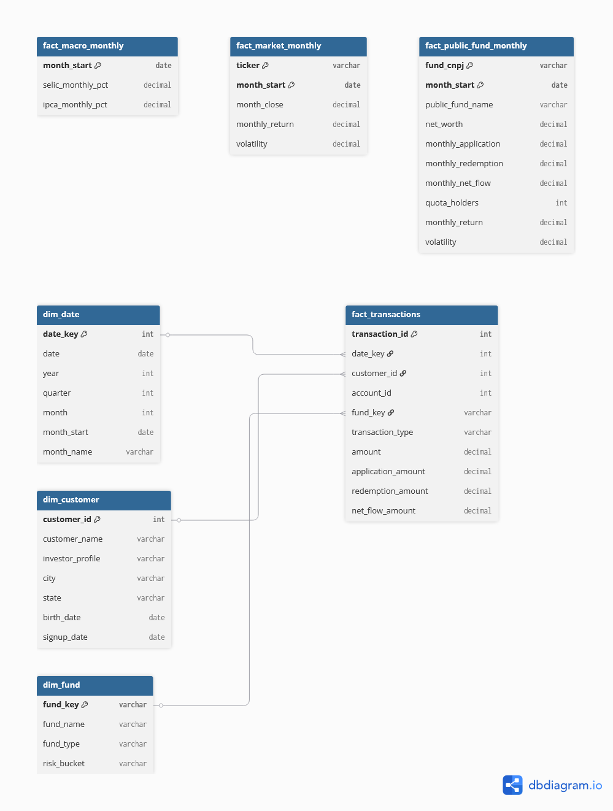

Universidade Federal do Espírito Santo - Centro Tecnológico
Departamento de Informática
Disciplina: INF17411 - Business Intelligence e Gestão Baseada em Dados
Professora: Camila Zacché de Aguiar
Período: 2026/1
Local: Vitória - ES
Este relatório apresenta a concepção, a modelagem e a implementação de uma solução de Business Intelligence aplicada à gestão de fundos de investimento. O projeto integra uma fonte interna simulada, composta por clientes, contas, produtos e movimentações, com dados públicos da Comissão de Valores Mobiliários (CVM), do Banco Central do Brasil e do mercado financeiro.
O processamento foi implementado em Python e Pandas segundo uma arquitetura medalhão, com camadas Bronze, Silver e Gold. As informações tratadas são carregadas em um Data Warehouse SQLite, com possibilidade de utilização do PostgreSQL, e consumidas por um dashboard desenvolvido em Streamlit. O resultado é uma base analítica reproduzível, capaz de apoiar análises de patrimônio, rentabilidade, captação, perfil dos investidores, localização, indicadores macroeconômicos e relação entre risco e retorno.
Palavras-chave: Business Intelligence; Data Warehouse; fundos de investimento; arquitetura medalhão; Streamlit; Python.
A Banestes Asset atua na administração fiduciária e na gestão de fundos de investimento distribuídos pelo Banestes S.A., além de realizar a gestão do Fundo de Investimento Imobiliário BCRI11, negociado em bolsa. A atividade de gestão é influenciada tanto pelas características dos clientes e produtos quanto pelo ambiente econômico.
Entre os fatores externos relevantes estão a taxa Selic, a inflação medida pelo IPCA e o comportamento dos índices de mercado. Internamente, a empresa necessita acompanhar clientes, perfis de risco, aplicações, resgates, captação líquida, rentabilidade e patrimônio dos fundos.
O cenário proposto considera que essas informações se encontram dispersas entre sistemas, arquivos e fontes públicas. A solução de BI foi construída para integrar esses dados e disponibilizá-los em uma estrutura única, histórica e apropriada para análise gerencial.
Desenvolver um projeto completo de Business Intelligence para integrar dados internos e públicos relacionados a fundos de investimento, transformando-os em informações analíticas capazes de apoiar decisões sobre desempenho, captação, perfil dos investidores e influência do cenário econômico.
O período configurado compreende janeiro de 2021 a dezembro de 2026. Como 2026 ainda está em andamento, as fontes públicas possuem observações até julho de 2026, enquanto a fonte interna fake e a dimensão de datas abrangem todo o ano configurado. A fonte interna simulada possui:
| Entidade | Quantidade |
|---|---|
| Clientes | 900 |
| Contas | 1.100 |
| Fundos internos | 4 |
| Movimentações | 14.000 |
Para controlar o consumo de memória, a ingestão da CVM seleciona os 80 fundos com maior patrimônio líquido no mês de referência mais recente. No processamento atual foram carregadas 102.590 observações diárias para esses fundos.
A fonte interna foi criada com a biblioteca Faker e complementada com regras de
negócio implementadas em Python. A semente 20261 garante que uma execução com a
mesma configuração produza dados reproduzíveis.
Foram simuladas quatro entidades:
A escolha do fundo é influenciada pelo perfil do investidor. Clientes conservadores possuem maior probabilidade de aplicar em renda fixa, enquanto clientes arrojados têm maior peso em fundos de ações. Essa regra torna a fonte fake adequada para analisar o relacionamento entre perfil e produto.
Quadro 1 - Recorte do cadastro interno de fundos
| fund_key | fund_name | fund_type | risk_bucket | ticker |
|---|---|---|---|---|
| RF_CONSERVADOR | Fundo Renda Fixa Conservador | Renda Fixa | Baixo | |
| MULTI_MACRO | Fundo Multimercado Macro | Multimercado | Médio | |
| ACOES_BRASIL | Fundo Ações Brasil | Ações | Alto | |
| IMOB_FII | Fundo Imobiliário BCRI11 | FII | Médio-alto | BCRI11.SA |
Quadro 2 - Recorte das movimentações internas
| transaction_id | account_id | customer_id | fund_key | transaction_date | transaction_type | amount |
|---|---|---|---|---|---|---|
| 1 | 279 | 253 | IMOB_FII | 2022-04-05 | Aplicação | 6.682,37 |
| 2 | 408 | 758 | RF_CONSERVADOR | 2021-11-16 | Aplicação | 1.229,78 |
| 3 | 833 | 206 | RF_CONSERVADOR | 2021-03-05 | Resgate | 4.853,40 |
Os nomes presentes nessa fonte são inteiramente sintéticos. Nenhum dado pessoal real foi utilizado.
Os informes diários de fundos e o cadastro cadastral são obtidos no Portal de Dados Abertos da CVM. Os arquivos mensais contêm dados de patrimônio, valor da cota, aplicações, resgates e quantidade de cotistas.
O perfil exploratório da fonte apresentou:
| Característica | Resultado |
|---|---|
| Período disponível | 04/01/2021 a 13/07/2026 |
| Fundos selecionados | 80 |
| Observações diárias filtradas | 102.590 |
| Fundos com denominação válida na Gold | 18 |
| Cadastro CVM | 46.808 registros antes do filtro |
Quadro 3 - Recorte dos informes da CVM após padronização
| fund_cnpj | date | share_value | net_worth | daily_application | daily_redemption | quota_holders |
|---|---|---|---|---|---|---|
| 00.083.181/0001-67 | 2021-01-04 | 701,02271134 | 16.337.242.387,53 | 0,00 | 0,00 | 4 |
| 00.083.181/0001-67 | 2021-01-05 | 701,49668255 | 16.348.288.224,62 | 0,00 | 0,00 | 4 |
| 00.083.181/0001-67 | 2021-01-06 | 691,65236546 | 16.118.867.705,24 | 0,00 | 0,00 | 4 |
O cadastro de fundos é utilizado para associar o CNPJ à denominação social. Registros sem nome real ou cujo nome contém apenas o próprio CNPJ são excluídos da camada Gold, evitando rótulos inadequados no dashboard.
Os indicadores macroeconômicos são obtidos pela API SGS do Banco Central:
As séries possuem calendários diferentes e são combinadas por data com junção externa, preservando todas as observações. O conjunto processado possui 1.416 linhas, entre 01/01/2021 e 15/07/2026.
Quadro 4 - Recorte das séries macroeconômicas
| date | selic_daily_pct | ipca_monthly_pct | month |
|---|---|---|---|
| 2021-01-01 | 0,25 | 2021-01-01 | |
| 2021-01-04 | 0,007469 | 2021-01-01 | |
| 2021-01-05 | 0,007469 | 2021-01-01 | |
| 2021-01-06 | 0,007469 | 2021-01-01 |
O projeto utiliza o yfinance para solicitar os fechamentos ajustados de BCRI11.SA e
^BVSP. A finalidade é calcular retorno mensal, volatilidade e índices acumulados de
base 100.
Na exploração registrada durante o desenvolvimento, essa requisição retornou zero linhas. O pipeline e o esquema analítico estão preparados para a fonte, mas uma nova execução bem-sucedida é necessária para preencher a comparação BCRI11 versus Ibovespa antes da captura definitiva do dashboard.
O dicionário completo, com tipos, granularidade e descrição de todas as colunas, está
disponível em docs/data_dictionary.md. Esta seção apresenta as estruturas centrais
das fontes e do modelo analítico.
| Tabela | Chave ou granularidade | Campos principais |
|---|---|---|
| internal_customers | Um cliente por customer_id |
customer_name, investor_profile, city, state, birth_date, signup_date |
| internal_accounts | Uma conta por account_id |
customer_id, account_open_date, channel |
| internal_funds | Um produto por fund_key |
fund_name, fund_type, risk_bucket, ticker |
| internal_transactions | Uma movimentação por transaction_id |
account_id, customer_id, fund_key, transaction_date, transaction_type, amount |
| Fonte | Campo original | Significado |
|---|---|---|
| CVM | CNPJ_FUNDO / CNPJ_FUNDO_CLASSE | Identificador do fundo ou classe |
| CVM | DT_COMPTC | Data de competência |
| CVM | VL_QUOTA | Valor da cota |
| CVM | VL_PATRIM_LIQ | Patrimônio líquido |
| CVM | CAPTC_DIA | Aplicação informada no dia |
| CVM | RESG_DIA | Resgate informado no dia |
| CVM | NR_COTST | Quantidade de cotistas |
| BCB | selic_daily_pct | Taxa Selic diária da série SGS 11 |
| BCB | ipca_monthly_pct | IPCA mensal da série SGS 433 |
| Yahoo Finance | close | Fechamento ajustado do ativo |
| Yahoo Finance | ticker | Identificador BCRI11.SA ou ^BVSP |
| Tabela | Granularidade | Finalidade |
|---|---|---|
| dim_date | Um registro por dia | Calendário para agrupamentos temporais |
| dim_customer | Um registro por cliente | Perfil e localização dos investidores |
| dim_fund | Um registro por fundo interno | Tipo de produto e faixa de risco |
| fact_transactions | Uma movimentação | Aplicações, resgates e captação líquida |
| fact_public_fund_monthly | Um fundo público por mês | Patrimônio, fluxo, retorno e volatilidade |
| fact_macro_monthly | Um registro por mês | Selic e IPCA |
| fact_market_monthly | Um ativo por mês | Fechamento, retorno e volatilidade |
| Tabela | Conteúdo analítico |
|---|---|
| gold_public_funds_monthly | Série mensal e retorno acumulado dos fundos públicos |
| gold_risk_return | Indicadores consolidados de risco e retorno por fundo |
| gold_internal_flows_monthly | Aplicações, resgates e captação por fundo e mês |
| gold_investor_profile_fund_type | Volume por perfil e tipo de fundo |
| gold_city_investment | Volume e investidores por cidade |
| gold_macro_funds_monthly | Selic, IPCA, fluxo de renda fixa e retorno dos fundos |
| gold_market_comparison_monthly | Comparação BCRI11 e Ibovespa |
As questões foram definidas para cobrir desempenho, fluxo financeiro, clientes, geografia, ambiente macroeconômico e risco.
| Nº | Questão | Visualização adotada | Dimensões e medidas |
|---|---|---|---|
| 1 | Qual foi a evolução mensal do patrimônio líquido por fundo? | Gráfico de linhas | Mês, fundo e patrimônio líquido |
| 2 | Qual fundo teve maior rentabilidade acumulada no período? | Ranking em barras horizontais | Fundo e retorno acumulado |
| 3 | Qual foi o volume mensal de aplicações e resgates? | Barras agrupadas | Mês, aplicações e resgates |
| 4 | Em quais meses houve maior captação líquida? | Ranking em barras horizontais | Mês e captação líquida |
| 5 | Qual perfil de investidor mais aplicou em cada tipo de fundo? | Barras agrupadas | Tipo de fundo, perfil e aplicações |
| 6 | Quais cidades concentram maior volume investido? | Ranking em barras horizontais | Cidade, UF e aplicações |
| 7 | Existe relação entre Selic e captação em fundos de renda fixa? | Linha e barras com dois eixos | Mês, Selic e captação líquida |
| 8 | Existe relação entre IPCA e rentabilidade dos fundos? | Dispersão | IPCA e retorno médio dos fundos |
| 9 | Como o BCRI11 se comportou em comparação ao Ibovespa? | Linhas em índice base 100 | Mês e índices acumulados |
| 10 | Quais fundos tiveram melhor relação entre rentabilidade e risco? | Dispersão com tamanho por patrimônio | Volatilidade, retorno e patrimônio |
As análises 7 e 8 permitem observar associação visual e não devem ser interpretadas, isoladamente, como evidência de causalidade.
O modelo segue uma constelação de fatos. O processo interno utiliza dimensões compartilhadas de data, cliente e fundo. Os dados públicos possuem fatos mensais específicos para fundos, macroeconomia e mercado.

Figura 1 - Modelo dimensional do projeto
As principais medidas são calculadas da seguinte forma:
application_amount = amount, quando transaction_type = "Aplicacao"
redemption_amount = amount, quando transaction_type = "Resgate"
net_flow_amount = application_amount - redemption_amount
monthly_return = produto(1 + daily_return) - 1
volatility = desvio_padrao(daily_return)
return_risk_ratio = accumulated_return / avg_daily_volatility
O arquivo-fonte atualizado do modelo encontra-se em docs/dbdiagram.dbml. As chaves
do DBML representam o modelo lógico. A carga atual realizada pelo Pandas recria as
tabelas sem aplicar fisicamente todas as restrições de chave.
| Ferramenta | Papel no projeto | Justificativa |
|---|---|---|
| Python 3.11+ | Linguagem principal | Ecossistema adequado para engenharia e análise de dados |
| Pandas | Ingestão, limpeza e agregação | Operações tabulares e tratamento de séries temporais |
| Faker | Geração da fonte interna | Dados sintéticos reproduzíveis sem exposição de dados reais |
| Requests | Consumo das APIs públicas | Requisições HTTP para CVM e Banco Central |
| yfinance | Dados de mercado | Interface para cotações do BCRI11 e Ibovespa |
| NumPy | Cálculos vetorizados | Medidas condicionais e tratamento numérico |
| SQLAlchemy | Carga e consulta do warehouse | Compatibilidade com SQLite e PostgreSQL |
| SQLite | Data Warehouse da demonstração | Banco portátil, simples e incluído no repositório de apresentação |
| PostgreSQL | Alternativa de Data Warehouse | Opção para execução em ambiente de servidor |
| Streamlit | Dashboard | Construção rápida de aplicação analítica interativa |
| Plotly | Gráficos | Interatividade, hover, zoom e diferenciação de séries |
| dbdiagram.io / DBML | Modelo dimensional | Documentação visual das tabelas e relacionamentos |
| Ruff | Qualidade do código | Formatação e verificação estática |
O pipeline segue a arquitetura medalhão:
Fontes internas e públicas
|
v
Bronze -> Silver -> Gold -> Data Warehouse -> Streamlit
A camada Bronze preserva os dados brutos:
data/bronze/internal: CSVs da fonte fake.data/bronze/public/cvm: arquivos ZIP e CSV originais da CVM.Essa camada permite rastreabilidade e evita novo download dos arquivos da CVM quando eles já estão disponíveis localmente.
A camada Silver contém dados limpos e padronizados:
CNPJ_FUNDO_CLASSE para CNPJ_FUNDO;A camada Gold contém:
Os DataFrames Gold são gravados em CSV para auditoria e carregados no Data Warehouse.
O Data Warehouse é a fonte oficial do dashboard. O SQLite utilizado na apresentação
fica em warehouse/bi_fundos.sqlite. A mesma aplicação aceita PostgreSQL por meio da
variável WAREHOUSE_URL.
O Streamlit consulta as tabelas gold_* do banco. Os CSVs são utilizados apenas como
contingência quando o warehouse não está disponível, situação sinalizada na barra
lateral do dashboard.
python -m venv .venv
..venvScriptsActivate.ps1
pip install -r requirements.txt
O arquivo .env define a URL do warehouse:
WAREHOUSE_URL=sqlite:///warehouse/bi_fundos.sqlite
O módulo src/fake_internal.py:
Trecho representativo:
fake = Faker("pt_BR")
Faker.seed(config.seed)
random.seed(config.seed)
np.random.seed(config.seed)
O módulo src/sources_public.py baixa os informes mensais e o cadastro. Antes de
concatenar o período inteiro, o pipeline:
VL_PATRIM_LIQ;Essa estratégia reduziu o volume carregado e evitou o consumo excessivo de memória observado na primeira versão do pipeline.
As séries do Banco Central são consultadas com período inicial e final:
fetch_bcb_series(11, "selic_daily_pct", start_date, end_date)
fetch_bcb_series(433, "ipca_monthly_pct", start_date, end_date)
As cotações são solicitadas para:
["BCRI11.SA", "^BVSP"]
O módulo src/transform.py implementa a padronização. Entre as regras aplicadas estão:
pd.to_datetime(..., errors="coerce") para datas;pd.to_numeric(..., errors="coerce") para medidas;date_key no formato YYYYMMDD;daily_net_flow;Os fatos públicos são agregados por CNPJ e mês. O retorno mensal é composto a partir dos retornos diários:
lambda s: (1 + s.dropna()).prod() - 1
Os data marts do Streamlit são construídos em src/dashboard_marts.py. Essa etapa
combina fatos e dimensões para entregar ao dashboard tabelas no nível exato de cada
visualização.
O módulo src/load_warehouse.py cria uma engine SQLAlchemy e carrega todas as tabelas
Gold:
engine = create_engine(warehouse_url)
with engine.begin() as connection:
for table_name, df in tables.items():
df.to_sql(table_name, connection, if_exists="replace", index=False)
O uso de transação garante que cada operação de carga seja controlada pela conexão do
banco. A opção replace torna a execução idempotente para fins de demonstração: uma
nova execução substitui a versão anterior das tabelas.
python -m src.pipeline --warehouse sqlite:///warehouse/bi_fundos.sqlite
Para reduzir o número de fundos públicos:
python -m src.pipeline --max-public-funds 30
Para iniciar o dashboard:
streamlit run app.py
Durante a apresentação, a barra lateral deve indicar:
Fonte: Data Warehouse (SQLITE)
PENDENTE: inserir nesta seção a imagem final do dashboard Streamlit.
O dashboard foi organizado em cinco abas:
Os gráficos utilizam filtros de período, cores distintas para fundos e ativos, tooltips, zoom e tabelas auxiliares. Os indicadores monetários são apresentados em formato compacto, mantendo o valor completo no texto de ajuda.
O projeto implementa o ciclo completo solicitado para uma solução de Business Intelligence: definição do escopo, criação de fonte interna, exploração de fontes públicas, modelagem multidimensional, tratamento em arquitetura medalhão, carga em Data Warehouse e construção de dashboard.
A integração entre dados transacionais simulados, informações de fundos da CVM e indicadores do Banco Central permite analisar o desempenho dos fundos sob diferentes perspectivas. A separação em camadas melhora a rastreabilidade, enquanto o Data Warehouse centraliza as informações tratadas e estabelece uma fonte única para o Streamlit.
Além de responder às questões gerenciais propostas, a implementação é reproduzível e pode ser evoluída para PostgreSQL, novas fontes externas, cargas incrementais e análises estatísticas mais aprofundadas.
Artefatos complementares
docs/data_dictionary.md: dicionário de dados completo.docs/dbdiagram.dbml: modelo multidimensional.docs/architecture.md: arquitetura técnica.sql/analysis_queries.sql: consultas correspondentes às dez questões.src/: código-fonte do pipeline.app.py: dashboard Streamlit.